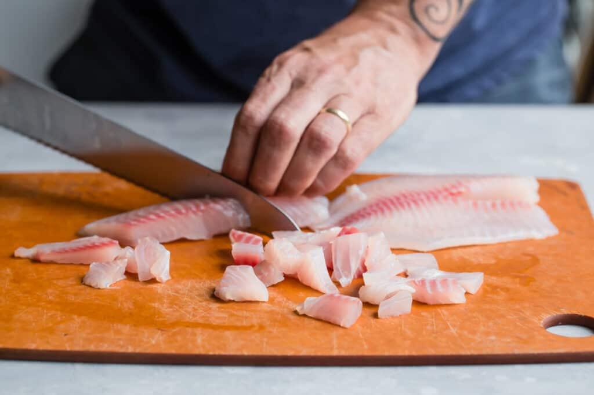
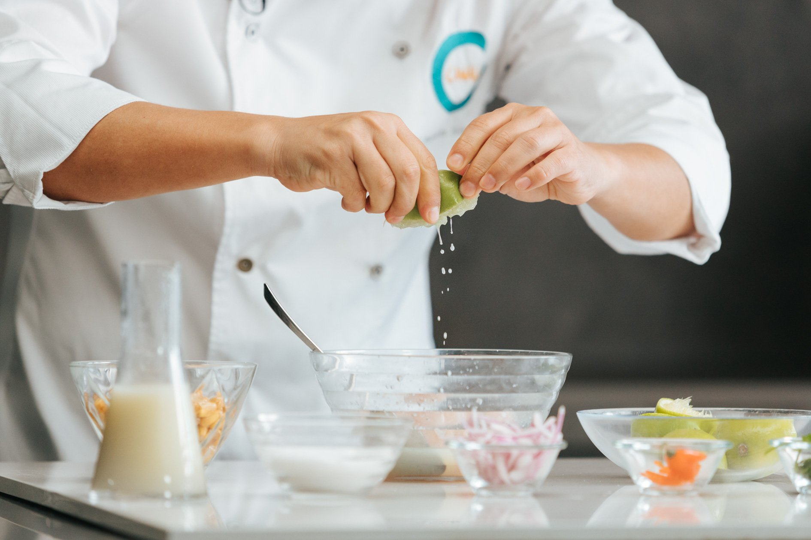
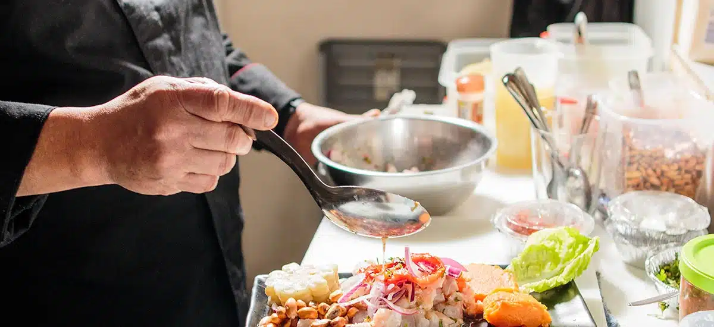

Sabor Criollo
Sabores peruanos que conquistan el corazón
Sabores peruanos que conquistan el corazón

El ceviche es uno de los platos más emblemáticos del Perú. Fresco, vibrante y lleno de sabor, combina pescado blanco en trozos, jugo de limón recién exprimido, cebolla roja, ají limo y cilantro. Una explosión de frescura en cada bocado.




Aprende paso a paso cómo preparar el ceviche peruano tradicional con este video explicativo.